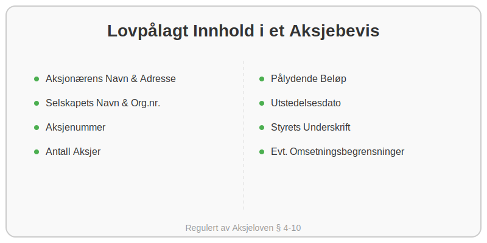

Et aksjebevis er et fundamentalt og juridisk bindende dokument som beviser at en person eller et selskap (en aksjonær) eier en eller flere aksjer i et aksjeselskap (AS). Selv om mange prosesser har blitt digitale, er den juridiske rollen til aksjebeviset fortsatt sentral i norsk selskapsrett, regulert av Aksjeloven.
I praksis fungerer aksjebeviset som en kvittering og et offisielt eierskapsbevis. Det gir aksjonæren rettigheter i selskapet, som stemmerett på generalforsamling, rett til utbytte og informasjonsrettigheter.
Hvorfor er Aksjebevis Viktig?
Aksjebeviset har flere kritiske funksjoner, både for aksjonæren og for selskapet:
- Juridisk Bevis: Det er det endelige beviset på eierskap. Ved tvister eller uenighet er det aksjebeviset som gjelder.
- Oversikt og Kontroll: For selskapet er utstedelse av aksjebevis en del av plikten til å føre en oversikt over alle aksjonærer i aksjeeierboken.
- Omsettelighet: Dokumentet er nødvendig ved salg eller overføring av aksjer. Kjøperen vil kreve å se aksjebeviset som bevis på selgerens reelle eierskap.
- Sikkerhet: Aksjebevis kan brukes som sikkerhet ved lån (pantsettelse), selv om dette er mindre vanlig for fysiske bevis i dag.
Hva Skal et Aksjebevis Inneholde?
I henhold til Aksjeloven § 4-10 er det klare krav til hva et aksjebevis skal inneholde. Manglende eller feilaktig informasjon kan i verste fall gjøre beviset ugyldig.

Her er en oversikt over de lovpålagte punktene:
| Informasjonselement | Beskrivelse | Hvorfor er det viktig? |
|---|---|---|
| Aksjonærens Navn og Adresse | Fullt navn og bosteds- eller forretningsadresse til eieren. | Identifiserer eieren av aksjene entydig. |
| Selskapets Navn og Org.nr. | Fullt juridisk navn på selskapet og dets organisasjonsnummer. | Knytter aksjene til riktig selskap. |
| Aksjenummer | Et løpenummer eller en serie med numre for de aksjene beviset gjelder. | Unik identifikasjon av hver enkelt aksje. |
| Antall Aksjer | Det totale antallet aksjer som aksjebeviset omfatter. | Definerer omfanget av eierskapet. |
| Pålydende Beløp | Aksjens nominelle verdi. Summen av pålydende for alle aksjer utgjør selskapets aksjekapital. | Viser den opprinnelige verdien per aksje ved stiftelse. |
| Utstedelsesdato | Datoen da aksjebeviset ble formelt utstedt av selskapets styre. | Dokumenterer tidspunktet for eierskapets formalisering. |
| Styrets Underskrift | Underskrift fra minst ett styremedlem. | Bekrefter at styret har godkjent og utstedt beviset. |
| Eventuelle Omsetningsbegrensninger | Hvis selskapets vedtekter har regler om forkjøpsrett eller krav om styrets samtykke ved salg. | Informerer eieren og potensielle kjøpere om begrensninger i aksjens frie omsettelighet. |
Fra Fysisk til Digitalt: Fremtidens Aksjebevis
Selv om loven fortsatt beskriver et fysisk eller elektronisk dokument, har utviklingen gått mot digitale løsninger. Mange selskaper, spesielt de som er registrert i Verdipapirsentralen (VPS), har ikke lenger fysiske aksjebevis. I stedet er eierskapet registrert elektronisk.
- Fordeler med digitale aksjebevis:
- Enkelhet: Raskere og enklere å overføre eierskap.
- Sikkerhet: Redusert risiko for tap, tyveri eller forfalskning.
- Effektivitet: Lettere for selskapet å administrere aksjeeierboken.
For de fleste små og mellomstore aksjeselskaper som ikke er på børs eller i VPS, er det likevel vanlig praksis å utstede et fysisk eller et signert PDF-dokument som aksjebevis. Dette gir en trygghet og en formalitet som mange verdsetter.
Hva Gjør du Hvis du Mister et Aksjebevis?
Å miste et aksjebevis kan skape problemer, spesielt hvis du skal selge aksjene dine. Hvis uhellet er ute, må aksjebeviset mortifiseres (kjennes ugyldig). Dette er en formell prosess som innebærer:
- Melding til Selskapet: Informer styret i selskapet umiddelbart.
- Kunngjøring: Selskapet må ofte kunngjøre at aksjebeviset er tapt, for eksempel i Brønnøysundregistrenes elektroniske kunngjøringsavis.
- Venteperiode: Det er en lovpålagt venteperiode for å se om noen med rette interesser melder seg.
- Nytt Aksjebevis: Etter venteperioden kan styret utstede et nytt aksjebevis som erstatter det tapte.
Denne prosessen understreker viktigheten av å oppbevare aksjebevis på et trygt sted.
Oppsummering
Et aksjebevis er mer enn bare et papir; det er selve kjernen i eierskapsdokumentasjonen i et aksjeselskap. Det sikrer rettighetene til aksjonæren og gir selskapet en formell oversikt over sine eiere. Enten det er et fysisk dokument eller en digital registrering, er formålet det samme: å skape trygghet, klarhet og forutsigbarhet rundt eierskapet i norske selskaper. For enhver som eier, kjøper eller selger aksjer, er en grunnleggende forståelse av aksjebeviset helt essensielt.